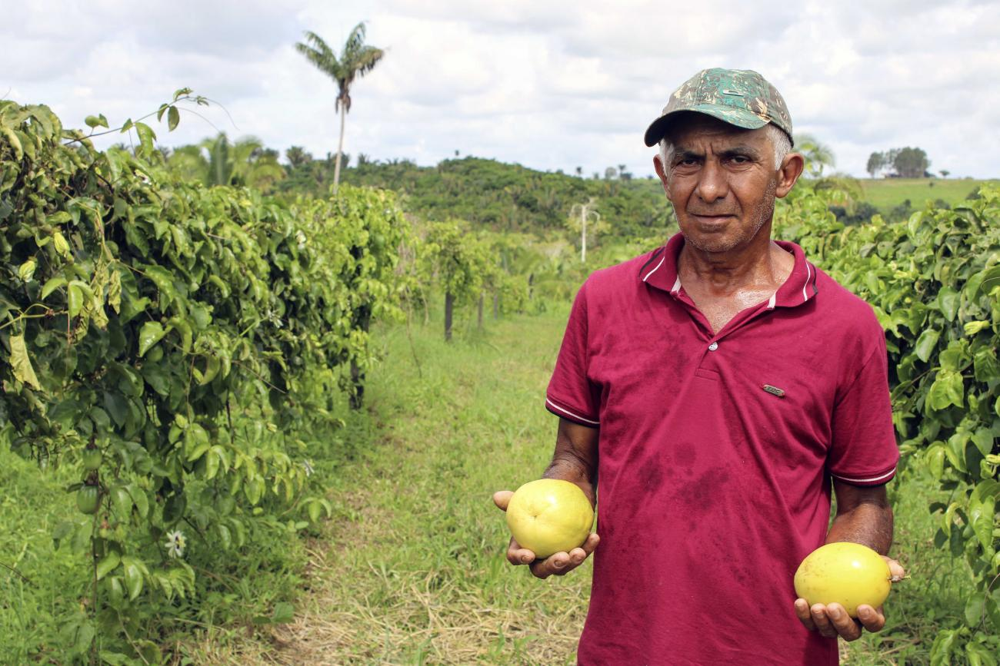
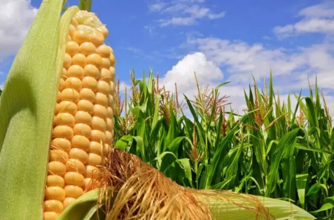
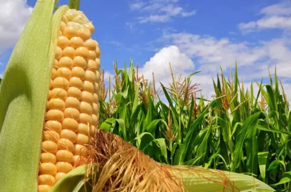
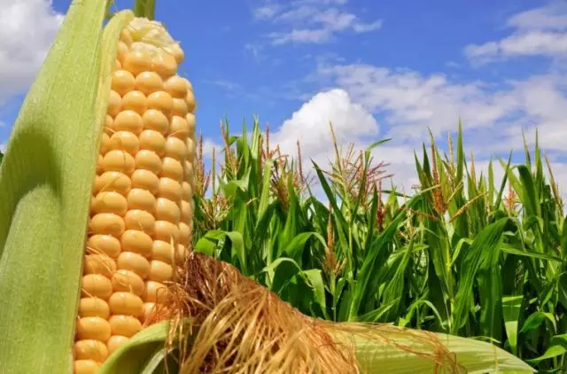

Sudeste
Nesta época, as mais indicadas são quiabo, abóbora, pepino,
pimenta, salsa, maxixe, couve-de-folha, batata-doce e taioba,
informa em seu site o Ministério do Desenvolvimento Agrário.
A região sudeste é considerada a região mais forte economicamente.
Ela reúne São Paulo, Rio de Janeiro, Minas Gerais e Espírito Santo.
O Sudeste se destaca, no agropecuário, pela produção de cana-de-açúcar e
de carne bovina. Cerca de 50% da cana brasileira é produzida ali.
Ela reúne São Paulo, Rio de Janeiro, Minas Gerais e Espírito Santo.
O Sudeste se destaca, no agropecuário, pela produção de cana-de-açúcar e
de carne bovina. Cerca de 50% da cana brasileira é produzida ali.

 

